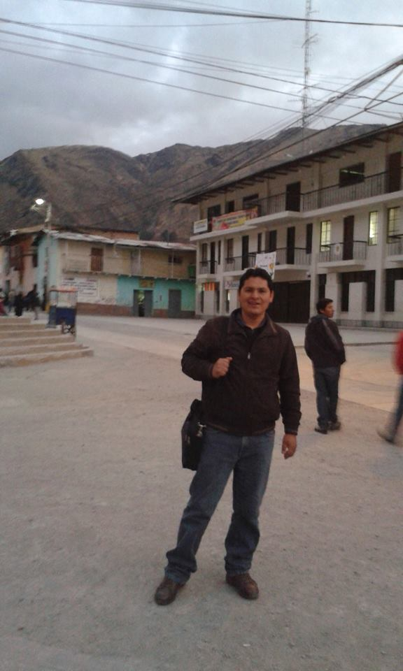

Hoja de Vida
Datos personales:
Baltazar Quiroz Torrealva
Información personal:

- Fecha de nacimiento:
- 02 noviembre de 1979.
- Lugar de nacimiento:
- Trujillo - Trujillo - La Libertad - Perú.
Perfil:
Soy Docente de Matematica - Computación e Informática,
y ya tengo conocimiento para desarrollo de páginas Web,
con conocimiento en HTML5. También desarrollo aplicaciones en
Java Eclipse, Visual Basic.Net.
Dominio en el idioma de:
- Contacto:
- email: batitaqt@gmail.com.
- Celular:
- 951707881 - Perú.